연구 노트 · 2026년 10월 20일
Busy Beaver 탐험기
멈추는 작은 기계는 얼마나 오래 일할 수 있을까. 기계를 직접 한 걸음씩 돌려 보면서, 1,400만 개를 무작위로 시험한 결과까지 따라가 봅니다.
요약
- BB(5) = 47,176,870걸음. 2024년에 증명됐고, 이 노트의 시뮬레이터로 똑같이 재현했어요.
- 무작위로 만든 기계 1,400만 개 중 420개는 간단한 판정기로 결론이 안 났어요.
- 직접 만든 n-gram CPS 판정기로 그중 405개가 '절대 안 멈춤'을 증명했어요. 눈에 띄던 후보 13개도 모두 증명돼서, 새 크립티드는 없었어요.
- 그래도 남은 15개에는 바운서 판정기를 직접 만들어 씌웠어요. 5개를 더 증명했고, 나머지 10개는 2진수 카운터처럼 보이는 기계라 이 방법으로는 안 풀렸어요.
01튜링 기계는 이렇게 움직여요
칸이 끝없이 이어진 테이프가 있고, 그 위에서 헤드 하나가 한 칸씩 움직입니다. 헤드는 지금 자기 상태(A, B, …)와 발밑 칸의 기호를 보고, 규칙표에서 딱 한 줄을 골라 따라요. 규칙 한 줄은 ① 기호를 쓰고 ② 왼쪽이나 오른쪽으로 한 칸 가고 ③ 상태를 바꾸는 일을 합니다.
표기법1RB = 1을 쓰고, 오른쪽(R)으로 한 칸, 상태 B로. 1RZ의 Z는 멈춤. 규칙표 전체는 1RB1LB_1LA1RZ처럼 한 줄로 씁니다(bbchallenge 표준 형식).
여섯 걸음 만에 멈추죠. 상태가 2개인 기계 중에 멈추면서 이보다 오래 일하는 기계는 없습니다. 그래서 BB(2) = 6이에요. 언제나 상태 A, 전부 0인 테이프에서 시작하고, 멈추는 걸음도 1걸음으로 셉니다.
걸음을 쌓으면 그림이 돼요
매 걸음의 테이프를 한 줄로 찍고, 위에서 아래로 쌓으면 기계의 일생이 한 장의 그림이 됩니다. 이런 그림을 시공간 다이어그램이라고 불러요. 기계를 바꿔 가며 재생해 보세요.
한 줄 = 한 순간의 테이프. 주황 칸이 그때 헤드가 있던 자리예요. 아주 긴 실행은 여러 칸을 한 점으로 줄여 그리고, 0이 많이 섞인 곳일수록 흐리게 칠합니다.
상태가 5개만 돼도 이야기가 완전히 달라집니다. BB(5) 챔피언은 47,176,870걸음을 일하고 멈춰요. 같은 방식으로 그리면 아래처럼 됩니다.

1RB1LC_1RC1RB_1RD0LE_1LA1LD_1RZ0LA의 실행 전체. 테이프 폭이 12,289칸까지 넓어졌다가 멈춥니다. 다음 장의 시뮬레이터에서 직접 끝까지 돌려 볼 수 있어요.02직접 돌려 보기
아래 시뮬레이터는 위 위젯과 같은 일을 훨씬 빨리 합니다. 속도를 끝까지 올리면 BB(5) 챔피언도 브라우저에서 끝까지(47,176,870걸음) 돌아가요. 크립티드나 직접 만든 규칙 문자열도 넣어 보세요.
이 시뮬레이터의 결과는 C 시뮬레이터(./bb run)와 걸음 수·남은 1의 개수·테이프 폭까지 똑같은지 검사했습니다.
- 걸음
- 0
- 0 아닌 칸
- 0
- 테이프 폭
- 1
03Busy Beaver 수 BB(n)
상태가 n개인 기계 중 멈추는 기계가 일할 수 있는 최대 걸음 수가 BB(n)입니다. 기호를 m개 쓰면 BB(n, m). 어려운 점은 아직 안 멈춘 기계가 영원히 안 멈춘다는 것을 하나하나 증명해야 한다는 거예요. 이걸 모든 기계에 대해 판정하는 프로그램은 존재할 수 없어서(정지 문제), n이 조금만 커져도 BB(n)은 증명이 거의 불가능해집니다.
10↑↑4는 10의 10제곱의 10제곱의 10제곱처럼 지수를 탑으로 쌓은 수예요. 10↑↑10↑↑10↑↑8은 그 탑의 높이가 또 탑입니다.
| 영역 | 값 / 현재 하한 | 상태 |
|---|---|---|
| BB(2), BB(3), BB(4) | 6, 21, 107 | 해결 (1960~80년대) |
| BB(5) | 47,176,870 | 해결 (2024년 6월). 챔피언은 1을 4,098개 남김. Coq(Rocq) 증명 보조기로 5상태 기계 181,385,789개를 전부 판정. |
| BB(2,4) | 3,932,964 | 해결 (BB(5) 논문에서 함께) |
| BB(6) | > 10↑↑10↑↑10↑↑8 | 미해결. 2025년 6월 mxdys가 찾은 챔피언 1RB1RA_1RC1RZ_1LD0RF_1RA0LE_0LD1RC_1RA0RE. 판정 안 된 기계 663개(동치 제외, 2026-10-16 기준). Antihydra 등 크립티드 존재. |
| BB(2,5) | > 10↑↑4 | 미해결. 챔피언 Daniel Yuan (2024년 6월). 공식 holdout 59개(2026-10-09 기준). 크립티드 Hydra. |
| BB(3,3) | ≥ 119,112,334,170,342,541 | 미해결. 챔피언 Ligocki 부부 (2007). 남은 holdout 6개(실질 4개). 크립티드 Bigfoot. |
이 노트의 C 시뮬레이터로 BB(5) 챔피언을 돌리면 정확히 47,176,870걸음에 멈추고 1이 4,098개 남습니다(약 0.3초). BB(2)=6, BB(3)=21, BB(4)=107, BB(2,4)=3,932,964도 모두 일치했어요.
04크립티드: 멈출지 아무도 모르는 기계
몇몇 작은 기계는 분석해 보면 콜라츠 문제(3n+1 문제)와 닮은 수학 난제로 바뀝니다. bbchallenge에서는 이런 기계를 크립티드라고 불러요. 크립티드가 하나라도 있으면, 그 영역의 BB 값은 그 난제를 풀기 전까지 확정할 수 없습니다.
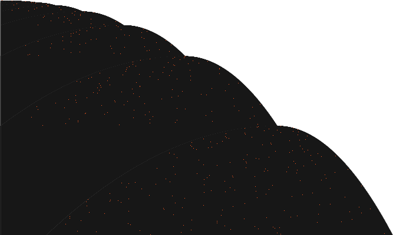
Antihydra BB(6)
⌊3n/2⌋+2를 되풀이하며 홀짝을 세는 기계. 콜라츠 문제와 닮아 아무도 멈출지 증명하지 못했어요. 2024년 6월 발견.
1RB1RA_0LC1LE_1LD1LC_1LA0LB_1LF1RE_---0RA
폭 7,330칸
Hydra BB(2,5)
Antihydra의 원조. 상태 2개, 기호 5개로 같은 종류의 난제를 품고 있어요. 2024년 4월 발견.
1RB3RB---3LA1RA_2LA3RA4LB0LB0LA
폭 5,428칸
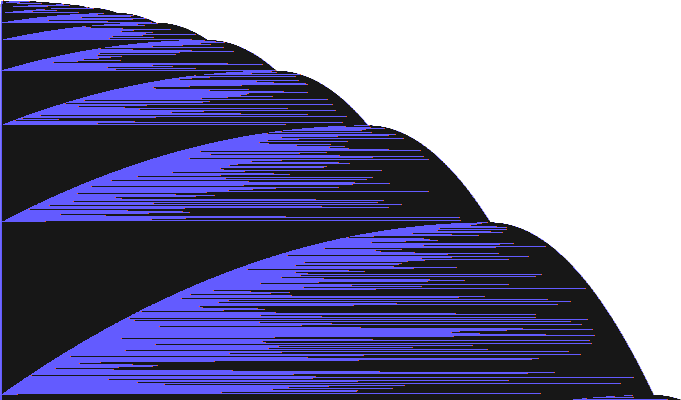
Bigfoot BB(3,3)
이 기계 때문에 BB(3,3)을 끝내려면 수학 난제 하나를 먼저 풀어야 해요. 2023년 10월 발견.
1RB2RA1LC_2LC1RB2RB_---2LA1LA
폭 6,122칸
그림: 각 기계의 3천만 걸음. 위에서 아래로 시간, 가로는 테이프. 작은 선은 걸음에 따른 테이프 폭이에요.
05무작위로 기계를 만들어 시험해 봤어요
BB(6)과 BB(2,5)는 기계가 너무 많아서 전부 돌릴 수 없어요. 그래서 무작위로 기계를 만들어 돌렸습니다. 규칙을 미리 다 정하지 않고, 정해지지 않은 규칙(---)을 만나면 그때 무작위로 채웠어요. 그리고 각 기계에 판정기를 씌웠습니다.
- 순환: 테이프·헤드·상태가 예전과 똑같아지면 영원히 반복 → 안 멈춤(증명).
- 평행이동 순환: 같은 무늬가 옆으로 옮겨 가며 반복 → 안 멈춤(증명).
- 바운서·카운터 검사: 테이프 끝 기록 시각이 규칙적으로 늘어나는지 보는 휴리스틱. 증명이 아니라 분류 표시예요.
- 걸음 제한: 10만 걸음 안에 판정이 안 되면 holdout으로 남깁니다.
상태를 5개 이하만 쓰는 기계는 사실상 5상태 기계라서, 이미 전부 판정된 BB(5) 영역이에요. 그래서 마지막에 '전부 쓰는 것'만 남겼습니다.
BB(6) · 무작위 기계 10,000,000개
| 무작위로 만든 기계 | 10,000,000 | |
| 멈춤 (halt) | 6,508 | |
| 순환 (cycler)으로 판정 | 876,273 | |
| 평행이동 순환 (translated cycler)으로 판정 | 9,048,856 | |
| 10만 걸음 동안 판정 못 함 (holdout) | 68,363 | |
| 중복 제거 후 holdout | 17,997 | |
| 그중 바운서·카운터 패턴도 아닌 것 | 496 | |
| 1천만 걸음까지 다시 돌려도 불규칙 | 365 | |
| 그중 상태 6개를 전부 쓰는 것 | 58 | |
| n-gram CPS로도 증명 못 한 것 | 3 | |
| 바운서 판정기로도 증명 못 한 것 | 1 |
BB(2,5) · 무작위 기계 4,000,000개
| 무작위로 만든 기계 | 4,000,000 | |
| 멈춤 (halt) | 9,514 | |
| 순환 (cycler)으로 판정 | 181,447 | |
| 평행이동 순환 (translated cycler)으로 판정 | 3,750,648 | |
| 10만 걸음 동안 판정 못 함 (holdout) | 58,391 | |
| 중복 제거 후 holdout | 15,250 | |
| 그중 바운서·카운터 패턴도 아닌 것 | 1,017 | |
| 1천만 걸음까지 다시 돌려도 불규칙 | 696 | |
| 그중 기호 5개를 전부 쓰는 것 | 362 | |
| n-gram CPS로도 증명 못 한 것 | 12 | |
| 바운서 판정기로도 증명 못 한 것 | 9 |
막대는 작은 수도 보이도록 압축한 눈금이에요(정비례 아님). 찾은 가장 오래 걸린 멈춤 기계: BB(6) 246걸음, BB(2,5) 6,455걸음. 챔피언과는 비교도 안 돼요. 좋은 기계는 정말 드뭅니다.
같은 방법으로 Antihydra·Hydra·Bigfoot을 검사하면 모두 '불규칙 holdout'으로 남아요. 판정기가 크립티드를 잘못 '해결'하지 않는다는 확인입니다.
진짜 증명: n-gram CPS
위 판정기로 결론이 안 난 420개에 더 강한 판정기를 직접 만들어 씌웠어요. BB(5) 증명에도 쓰인 n-gram CPS(Closed Position Set)예요. 헤드 양옆의 n칸만 기억하는 대신, 테이프에 나타날 수 있는 n칸 조각을 넉넉하게 모두 모아 두고 더 늘어나지 않을 때까지 넓힙니다. 그렇게 닫힌 집합 안에서 멈춤 규칙에 닿는 경우가 하나도 없으면, 실제 기계도 절대 멈추지 않아요.
칸 하나씩이 아니라 칸 k개를 한 기호로 묶은 블록 기계 위에서도 돌려요. 2진수 세기처럼 정확한 개수가 필요한 기계는 이렇게 해야 풀립니다.
남은 기계는 대부분 테이프 폭이 √걸음 속도로 자라요. 공식 목록에 없다는 건 bbchallenge의 더 강한 판정기로 이미 풀렸다는 뜻이라, 이것도 새 발견은 아닙니다. 공식 목록 비교는 BB(2,5)만 했어요. BB(6) 남은 3개는 공식 목록 파일과 아직 맞춰 보지 않았어요.
진짜 증명 2: 바운서 판정기
CPS가 못 푼 15개 중에는 헤드가 테이프 끝과 끝을 오가며(바운스) 한 번 갈 때마다 테이프가 조금씩 길어지는 기계가 있어요. 이런 기계의 테이프는 '같은 조각이 x번 반복'으로 적으면 매번 같은 모양이 됩니다. 그래서 x를 숫자 대신 문자로 둔 채 기계를 돌려요(기호 시뮬레이션).
- 건너뛰기: 헤드가 같은 조각을 같은 상태로 통과하면, 조각 x개를 한 번에 건넙니다. x가 몇이든 맞는 이동이에요.
- 귀납 규칙: 같은 모양이 다시 나오면 개수를 x로 바꿔서, "x가 몇이든 이 모양은 다시 이 모양으로 돌아온다"를 기호로 돌려 증명해요. 한 번 왕복하는 사이 안쪽에서 x번 지그재그하는 부분도 먼저 증명한 규칙으로 한 번에 처리합니다.
- 개수가 줄지 않고 다시 같은 모양이 되는 규칙이, 실제로 돌려서 도착한 테이프에 맞으면 → 영원히 되풀이 → 안 멈춤 증명.
아이디어는 bbchallenge의 바운서 판정기와 Shawn Ligocki의 증명 시스템에서 가져왔어요. 휴리스틱과 달리 모든 단계가 'x가 몇이든 참'인 이동이라서, 맞으면 증명이고 틀릴 수는 없어요. 대신 못 푸는 기계가 남을 수 있죠.
증명된 5개와 마지막 규칙이에요. 4^(x)는 '4가 x개', A>는 상태 A로 오른쪽을 보는 헤드, 0^∞는 끝없는 빈칸입니다. 예를 들어 맨 위 규칙은 "01 바로 뒤에서 상태 B 헤드가 오른쪽을 보고, 오른쪽에 10이 4+2x개 있으면, 한참 뒤 똑같은 모양에 10이 28+8x개가 된다"는 뜻이에요. 28+8x도 4+2x 꼴이라 규칙이 또 맞고, 개수는 계속 커지니 영원히 반복되죠.
1RB1LE_1RC0RA_1RD1LA_1LA0RF_0LA0LB_---1RB0^∞ 01 B> 10^(4+2x) 0^∞ → 0^∞ 01 B> 10^(28+8x) 0^∞1RB---_1RC1RB_0RD1LB_1LD1LE_0LA1RF_0LD0RF0^∞ 1^(1+x) B> 0^∞ → 0^∞ 1^(6+x) B> 0^∞1RB3RA2LB---1RA_2LA4LB1RB4LA1RB0^∞ <A 4^(x) 2 0^∞ → 0^∞ <A 4^(2+x) 2 0^∞1RB---4LB2RA2RA_2LB3LA3LA4RA2RB0^∞ 12 22^(x) 24 A> 20 0^∞ → 0^∞ 12 22^(9+4x) 24 A> 20 0^∞1RB2LA1LB4RA3LB_1LA---3RA3RB3LA0^∞ 1 4 A> 3^(4+2x) 2 0^∞ → 0^∞ 1 4 A> 3^(8+2x) 2 0^∞
남은 10개는 바운서가 아니라, 테이프 한쪽에 자릿수가 불규칙하게 바뀌는 작은 구역이 있는 기계예요(2진수 카운터처럼 보여요). 이런 구역은 '같은 조각 x번'으로 적을 수 없어서 이 방법으로는 안 풀려요. 칸 묶음 크기(1~4칸)와 기호 시뮬레이션 길이를 늘려 봐도 결과가 같았어요.
남은 기계들은 어떻게 생겼나
테이프 폭이 걸음 수에 따라 어떻게 자라는지(폭 ∝ 걸음지수)로 무리를 나눴어요. 그림은 각 기계의 처음 2,000걸음입니다.
바운서 (bouncer)
좌우로 왕복하며 테이프를 한 칸씩 넓힙니다. 왕복 시간이 규칙적으로 길어집니다. (휴리스틱으로 판정)
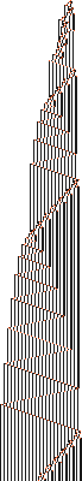
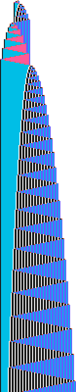
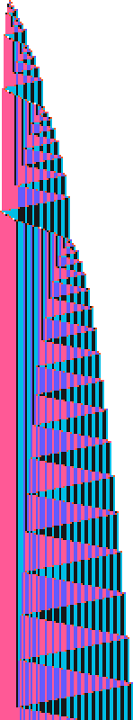
카운터 (counter)
2진수 세기처럼 동작해서 테이프가 아주 천천히(로그 속도로) 자랍니다.
세제곱근 성장
폭이 걸음 수의 약 1/3제곱으로 자랍니다. 바운서 안에 또 다른 반복이 들어 있는 경우가 많습니다.
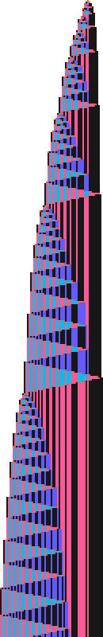
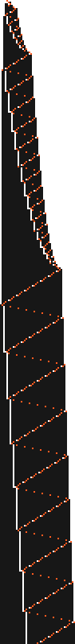
제곱근 성장 (복잡한 바운서?)
폭이 √걸음 수로 자라지만 단순 바운서 검사에는 걸리지 않습니다. Antihydra도 겉보기엔 이 무리에 속합니다.
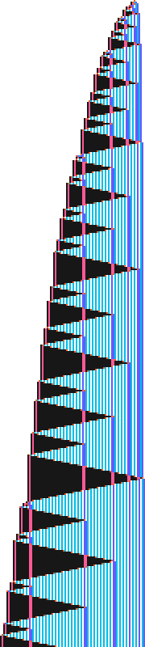
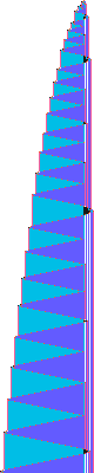
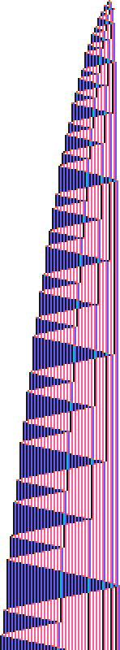
06눈에 띄던 후보, 모두 안 멈춤
결론: 새 크립티드가 아니었어요. 아래 기계들은 처음 판정기로는 결론이 안 났고, 성장 속도가 흔한 무리에서 벗어나 '이상해 보인다'고 표시했던 것들이에요. 10억 걸음까지 돌려도 멈추지 않았는데, 그건 증명이 아니었죠. 이번에 만든 n-gram CPS 판정기로 13/13개 모두 절대 멈추지 않는다는 증명이 나왔어요. 멈출지 모르는 '크립티드'와는 정반대인 평범한 기계였던 거예요.
성장 지수는 1천만→1억 걸음 사이 폭 증가로 계산했어요. 파란 표시는 증명에 쓰인 n칸 조각 길이와 블록 크기예요.
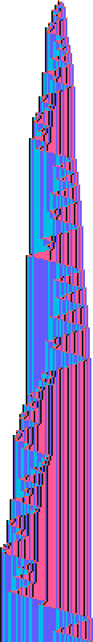
1RB1RB2LB4LA---_2LA4LB3RB1LA2RB
폭 11,873칸
✓ 안 멈춤 증명 · n-gram CPS (n=1, 블록 1칸)
가장 '들쭉날쭉'한 후보. 오른쪽 끝이 계단처럼 불규칙하게 자라고, 기록 간격의 변화도 덜 규칙적입니다(novelty 0.32).
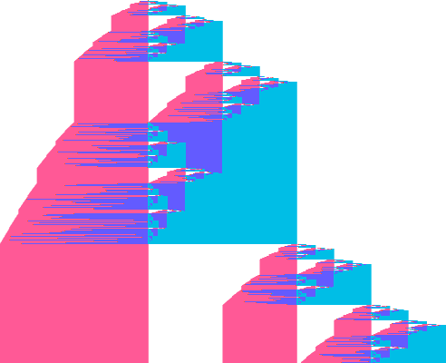
1RB0RB---1RB2LA_2LA4RA3LB0RB---
폭 12,287칸
✓ 안 멈춤 증명 · n-gram CPS (n=1, 블록 1칸)
같은 모양이 점점 크게 되풀이되는 자기유사(프랙탈) 구조. 보통 '중첩 카운터'로 설명되는 유형입니다.
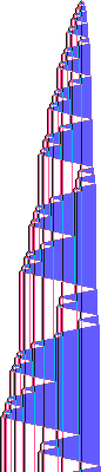
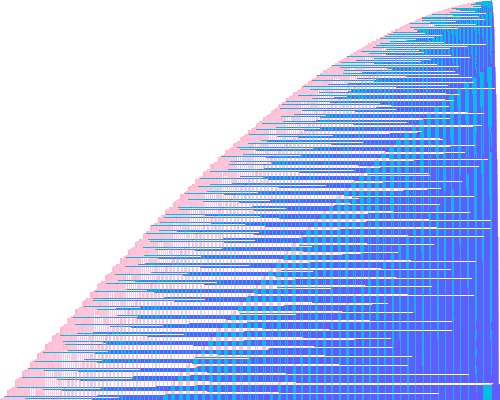
1RB---------2LB_2LB3LA0RB4RB1LB
폭 67,901칸
✓ 안 멈춤 증명 · n-gram CPS (n=2, 블록 1칸)
격자 무늬가 부채꼴로 퍼집니다. 10억 걸음에서 폭 약 28만 칸으로 가장 넓습니다.
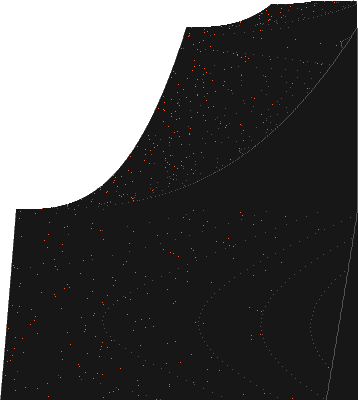
1RB---_0RC1RB_1LC0LD_1RE1LE_0LF1LE_0RB1LF
폭 1,072칸
✓ 안 멈춤 증명 · n-gram CPS (n=1, 블록 1칸)
6상태 전부 사용. 폭이 매우 느리게(10억 걸음에 2,200칸) 자라며 중간에 성장 속도가 바뀝니다.
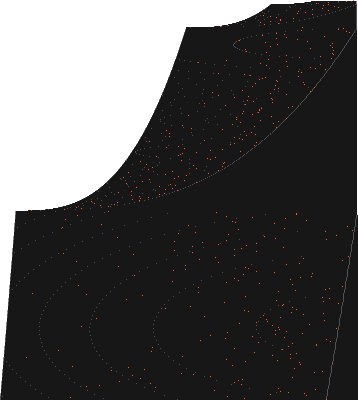
1RB---_1LC0LF_1RC0RD_1LE1RD_1LB1RB_0RB1LF
폭 1,071칸
✓ 안 멈춤 증명 · n-gram CPS (n=1, 블록 1칸)
바로 위 기계와 거의 같은 행동(쌍둥이). 서로 동치일 가능성이 큽니다.
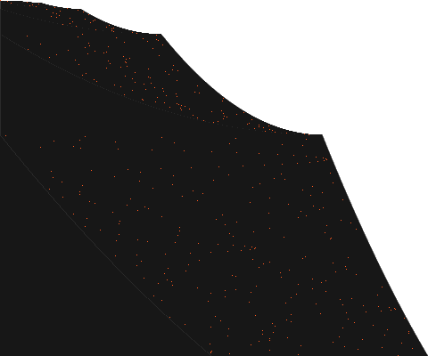
1RB0LC_1LA1RB_1RD0RF_1RE0RB_---1LC_0LA1LC
폭 8,156칸
✓ 안 멈춤 증명 · n-gram CPS (n=2, 블록 1칸)
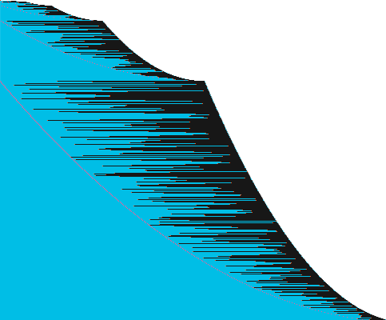
1RB3RA0LB1LA3RB_2LA4RA---3LA---
폭 11,591칸
✓ 안 멈춤 증명 · n-gram CPS (n=2, 블록 1칸)
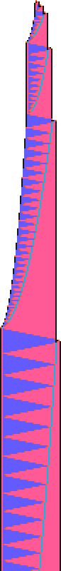
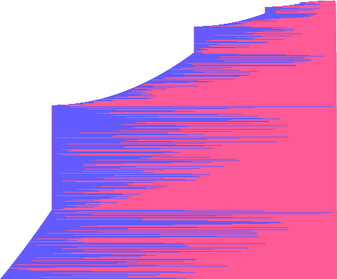
1RB2RB4LA---4RB_1LB1RA3LA4LB2RB
폭 7,241칸
✓ 안 멈춤 증명 · n-gram CPS (n=2, 블록 1칸)
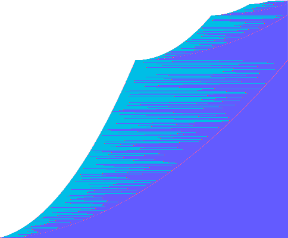
1RB1RB---4LB0RB_2LA4RB3RB2LB2LA
폭 11,601칸
✓ 안 멈춤 증명 · n-gram CPS (n=1, 블록 1칸)
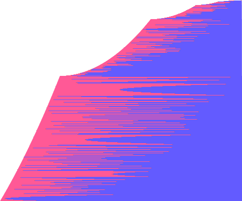
1RB2LB3LA---1LB_2LA4RB0RA2LB2LB
폭 8,160칸
✓ 안 멈춤 증명 · n-gram CPS (n=2, 블록 1칸)
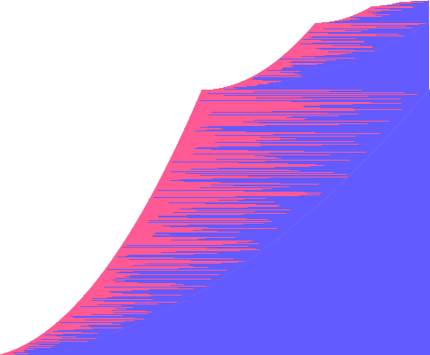
1RB3LB------0LB_2LA0RB4RB1RB2LB
폭 11,593칸
✓ 안 멈춤 증명 · n-gram CPS (n=1, 블록 1칸)
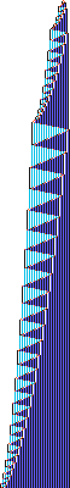
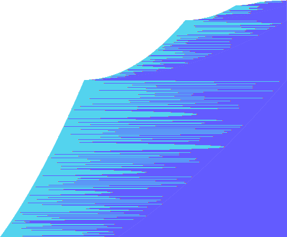
1RB3RB---0LA---_1LB2LA0RA4LA1LA
폭 11,590칸
✓ 안 멈춤 증명 · n-gram CPS (n=3, 블록 1칸)
1RB4RA4RB1RB2LA_2LB3RA4RB---0LA
폭 11,593칸
✓ 안 멈춤 증명 · n-gram CPS (n=1, 블록 1칸)
—출처
- bbchallenge wiki — Busy Beaver Challenge
- BB(5) · BB(6) · BB(2,5) · BB(3,3)
- Cryptids · Antihydra
- Standard Text Format · Translated cycler
- bbchallenge Collaboration, "Determination of the fifth Busy Beaver value", arXiv:2509.12337 (2025)
수치는 2026-10-20에 위 위키에서 확인했어요. holdout 개수 등은 계속 바뀝니다.